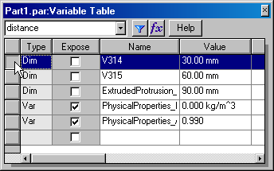

Create a variable with a link to a spreadsheet
You can use Microsoft Excel to link a variable to a spreadsheet. Besides Excel, you can use other spreadsheet software that can link or embed objects. Before you can link a variable to a spreadsheet, you must first create the variables you want in the Solid Edge document. Click the Related Topics button for more information about how to create a variable.
-
In another application, such as Excel, open the document that contains the spreadsheet you want to link to. The spreadsheet should contain the appropriate names and values for dimensional relationships.
-
Open the Solid Edge document that you want to link to and choose Tools tab→Variables group→Variables. Arrange the windows of the spreadsheet document and the Variable Table in the Solid Edge document so that you can see the appropriate cells in both documents.
-
In the spreadsheet, select the cell that contains the dimensional value you want to link to.
A
B
1
Height
30
2
Width
60
3
Depth
90
-
Copy the selected cell. For example, if you are using Excel, click Copy on the Edit menu.
-
In the Variable Table, click the row that contains the variable that you want to link the spreadsheet value to.

-
On the shortcut menu, click Paste Link.
-
Before you can link a variable to a spreadsheet, you must set the Allow Inter-Part Links Using: Paste Link to Variable Table option on the Solid Edge Options dialog box. This option is on the Inter-Part tab.
-
When you edit the value in the spreadsheet, the variable in the Variable Table updates as well. For example, when you link the dimensions in the Solid Edge document to an Excel spreadsheet, you can edit the dimension values in the Solid Edge document by editing the corresponding values in the Excel spreadsheet. The Solid Edge document automatically updates.
-
When you link Solid Edge variables to a spreadsheet, the document names and folder path for the spreadsheet and the Solid Edge document should contain only letters, numbers, and the underscore character. You should not use punctuation characters.
-
You can edit the links with the Edit Links command on the shortcut menu when a formula is selected in the Formula column in the variable table.
-
When making changes to a managed document that has links to a spreadsheet, such as Excel, you should open the Solid Edge document first. When you open the Solid Edge document, it is checked out from the managed library and copied to your local cache. The spreadsheet is also copied to your local cache, but it is not checked out or opened. You should open the spreadsheet using the Edit Links command on the variable table shortcut menu.
-
The cache folder location must be added to the Microsoft Office application’s Trusted Locations when you use Office 97–2003 file types (Example: .xls)
How do I
Example: Creating relationships between dimensions of several profilesDefine limits for a variable
Edit an existing variable
Create a Variable Using a Function or Subroutine
Create a Variable with a value or expression
Display dimensions in the Variable Table
Expose a variable
Extract Variable Table data using property text
Example: Linking variables to a spreadsheet
Suppress a feature using the Variable Table
Format a Column
Edit a formula
Edit a Formula Containing a Function
Insert a function into a formula
Edit an existing variable for a part within an assembly
Link variables between parts in an assembly
Learn more
Using variablesLook up more details
Variables commandVariable Table dialog box
Filter dialog box
Variable Rule Editor dialog box
Add Suppression Variable command
Edit Formula command
Edit Formula command bar
Peer Variables command
Peer Variables command bar
Function Wizard Step 1 of 2 dialog box
Function Wizard Step 2 of 2 dialog box
Alphabetical List of Functions
Show All Formulas Command
Show All Names Command
Show All Values Command
Copy Link command
Clear Contents command
Filter Command
Paste Link Command
Open Source command